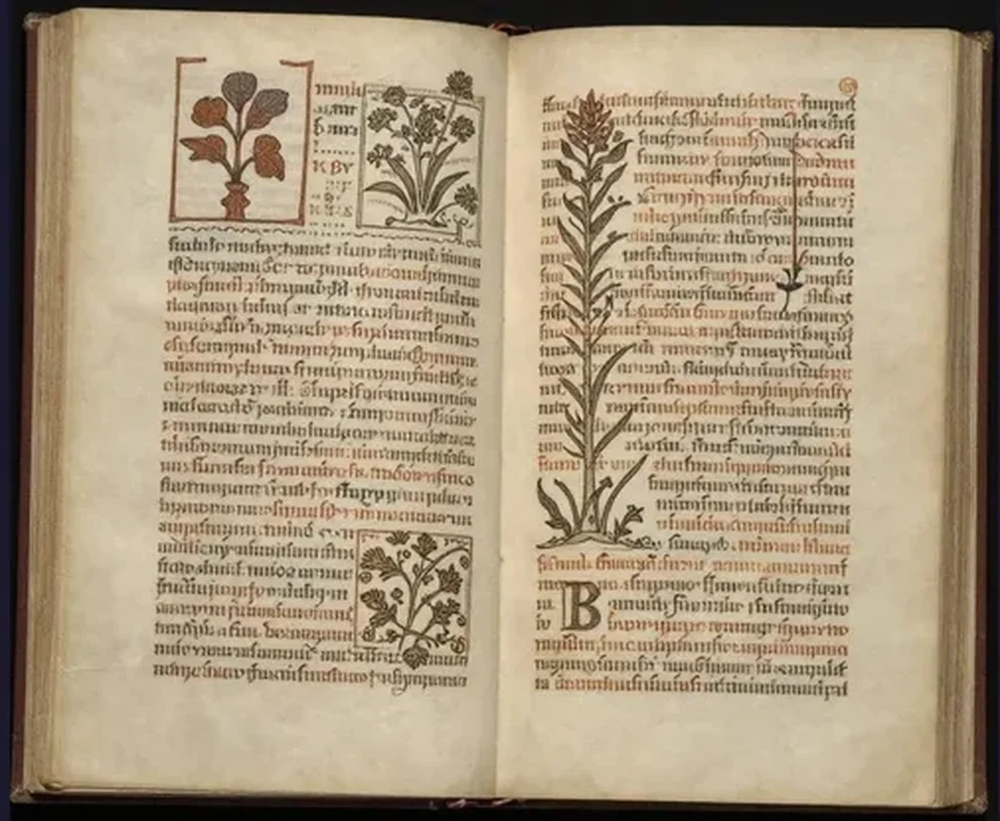
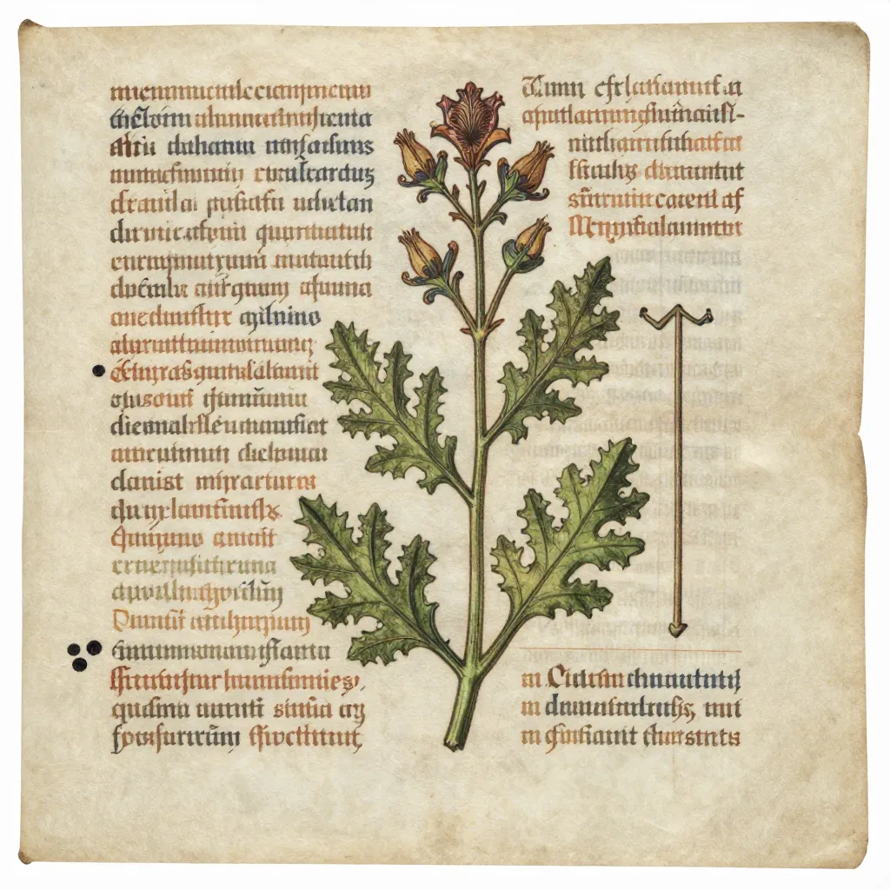
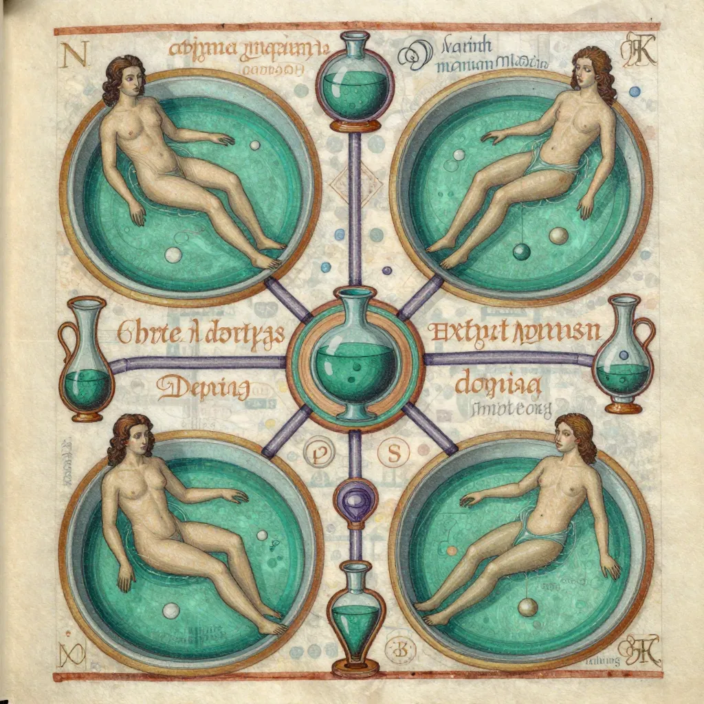

The Voynich Manuscript: The Most Mysterious Book in the World

The Voynich Manuscript has been called the most mysterious book in the world. Written in an unknown script over 600 years ago, no one has ever been able to read a single word.
In 1912, a Polish-American antiquarian book dealer named Wilfrid Voynich was rummaging through a chest of manuscripts in the library of the Villa Mondragone, a Jesuit college near Rome, when he found something that would obsess scholars, cryptanalysts, and eccentrics for more than a century. It was a book — approximately 240 pages of fine vellum, roughly the size of a modern paperback, filled with dense text written in an alphabet that nobody on Earth could read. The pages were decorated with illustrations that were, if anything, even more unsettling than the script: drawings of plants that match no known species, astronomical diagrams featuring impossible star systems, and — most disturbingly — dozens of tiny naked female figures bathing in pools of green liquid connected by a network of tubes, pipes, and biological-looking conduits that resemble nothing so much as a medieval vision of a plumbing system for the human body. The book was clearly old, carefully made, and entirely incomprehensible. Voynich purchased it from the Jesuits and brought it to America, where it attracted the attention of the greatest codebreakers of the twentieth century — including the cryptanalysts who cracked Enigma during World War II. None of them could read a single word. Over the decades, the manuscript has been subjected to every known form of analysis: statistical, computational, linguistic, chemical, radiographic. Radiocarbon dating has confirmed that the vellum dates to between 1404 and 1438, making it a genuine medieval artifact, not a modern forgery. The ink and pigments are consistent with the same period. And yet the text — written in an unknown alphabet of approximately 20 to 25 characters, in a script that flows with the confidence and regularity of a natural language — remains completely undeciphered. The Voynich Manuscript is, by a wide margin, the most mysterious book in the world.
What makes the Voynich Manuscript so maddening is that it looks like it should be readable. The text is not random — statistical analysis shows that it follows patterns characteristic of natural language: certain characters appear more frequently than others, words follow regular length distributions, and there are discernible patterns of repetition and structure that suggest grammar, syntax, and meaning. The illustrations, while bizarre, are organized into clear sections that suggest the manuscript was created for a practical purpose — perhaps a medical or alchemical treatise. And yet every attempt to match the text to a known language, to identify a cipher system, or to extract meaningful content has failed. The Voynich Manuscript sits in a climate-controlled vault at Yale University's Beinecke Rare Book and Manuscript Library (catalogued as MS 408), defying the best efforts of the world's most brilliant minds. It is a locked door with no key — or perhaps a door that opens onto nothing at all.
The Book That Cannot Be Read: Structure and Contents
The Voynich Manuscript is organized into five distinct sections, each characterized by a different type of illustration. The divisions were identified by early researchers and are generally accepted, though the boundaries between sections are not always sharp:
- Herbal section — The largest section, filling roughly half the manuscript. Each page displays one or two plants accompanied by descriptive text. The illustrations are detailed and skillfully drawn, but the vast majority of the plants do not match any known species. Some appear to be composites — fantastical combinations of leaves, flowers, and roots from different real plants. Others are simply unidentifiable. If the text describes the plants and their medicinal uses (as the layout suggests), it would represent an extraordinary pharmacological encyclopedia — if only we could read it.
- Astronomical section — Contains diagrams of stars, suns, moons, and zodiac symbols. Some pages feature circular diagrams with radiating segments containing stars, reminiscent of medieval astronomical tables or astrological charts. The zodiac illustrations are among the most recognizable images in the manuscript.
- Biological section — The strangest and most famous part of the manuscript. It contains dozens of drawings of small nude female figures immersed in pools or tubs of green liquid, connected by an elaborate network of pipes, tubes, and channels. The imagery has been interpreted as everything from a medieval gynecological treatise to an alchemical diagram to a representation of the human circulatory system. Nobody knows what it actually depicts.
- Cosmological section — Features complex circular diagrams, foldout pages with rosette-shaped designs, and what appear to be maps or schematic representations of the cosmos. Some researchers have suggested these pages may represent a medieval model of the universe.
- Pharmaceutical section — Shows drawings of what appear to be roots, herbs, and medicinal preparations, along with containers that resemble apothecary jars. This section most closely resembles known medieval herbal-pharmaceutical manuscripts.
📚 A Medieval Who's Who: The Provenance Trail
The documented history of the Voynich Manuscript reads like a thriller. Based on a letter found tucked inside the manuscript and on later research, scholars have traced its ownership back to the early seventeenth century. The letter, written in 1666, indicates that the manuscript was once owned by Emperor Rudolf II of Bohemia (1552-1612), the reclusive Habsburg ruler who was obsessed with alchemy, astrology, and the occult. Rudolf reportedly paid the equivalent of 600 gold ducats for the book — an enormous sum — and believed it was the work of the English polymath Roger Bacon. After Rudolf's death, the manuscript passed to his physician, Jacobus Sinapius, and eventually to the Jesuit scholar Athanasius Kircher in Rome, one of the most learned men of the seventeenth century, who published some of the manuscript's zodiac illustrations but was unable to decipher the text. The trail then goes cold for more than two centuries until Voynich found it in the Jesuit library in 1912. The manuscript was purchased by the book dealer Hans Kraus in 1961 and donated to Yale University in 1969. Each owner added a layer of mystery to the book, much as the successive caretakers of the Rosetta Stone or the scholars who studied the Dead Sea Scrolls each contributed their own interpretations before the truth emerged.

A page from the Voynich Manuscript's herbal section, showing an unidentifiable plant alongside text in a script that has never been decoded.
Codebreakers, Computers, and the Failure to Decode
The history of attempts to decode the Voynich Manuscript is a chronicle of failure — brilliant, persistent, occasionally desperate failure. The first serious modern analysis was conducted in the 1920s by William Romaine Newbold, a professor of philosophy at the University of Pennsylvania, who claimed to have deciphered the text as a microscopic cipher revealing that Roger Bacon had possessed a telescope and knowledge of the Andromeda galaxy. Newbold's claims were demolished by later scholars, who showed that his method was essentially arbitrary and that he was reading meaning into random features of the manuscript's letterforms.
In the 1940s and 1950s, the manuscript attracted the attention of professional cryptanalysts — including William Friedman, the chief cryptologist of the U.S. National Security Agency and the man who broke the Japanese PURPLE code during World War II. Friedman assembled a team of codebreakers, including several who had worked on Enigma, and spent years studying the manuscript. Their conclusion, delivered with obvious frustration, was that the Voynich text was not any known cipher system and could not be broken by standard cryptanalytic techniques. Friedman himself eventually speculated that the text might be a constructed artificial language — a guess that remains one of the most plausible explanations.
The arrival of computational analysis in the late twentieth century brought new tools but no breakthroughs. Statistical studies confirmed that the Voynich text exhibits properties of natural language — Zipf's Law (a statistical pattern found in all natural languages), character frequency distributions, and word-length regularities — but matched no known language. In 2014, researchers at the University of Bedfordshire published a study arguing that the manuscript's text is consistent with a constructed language — an artificial tongue designed by the author, following its own internal rules but not corresponding to any natural language. In 2019, a team led by computer scientist Greg Kondrak at the University of Alberta used artificial intelligence to analyze the text and concluded that it most closely resembles Hebrew in its statistical patterns, suggesting it might be an encoded Hebrew text — though their proposed translations were unconvincing to most scholars. Also in 2019, a Turkish researcher named Ahmet Ardıç claimed that the manuscript was written in a lost Turkic language using a phonemic cipher, but this claim has not been independently verified.
Is the Voynich Manuscript a Hoax?
The possibility that the Voynich Manuscript is an elaborate medieval forgery or hoax has been debated since Voynich first brought it to public attention. The radiocarbon dating of the vellum to 1404-1438 eliminates the possibility that it is a modern forgery by Voynich himself — a theory that has been periodically proposed and dismissed. But the vellum being medieval does not prove that the text is meaningful. In 2003, the computer scientist Gordon Rugg published a provocative paper demonstrating that the statistical properties of the Voynich text could be reproduced using a simple grid-based cardan grille system — a sixteenth-century technique for generating meaningless text that looks like language. Rugg argued that a medieval forger could have used this method to create a convincing-looking book of gibberish, perhaps to sell to a wealthy patron like Emperor Rudolf II. However, subsequent analyses have shown that the Voynich text exhibits certain higher-order statistical properties — patterns beyond simple character frequencies — that are not easily reproduced by Rugg's method, suggesting that the text is more complex than a simple hoax would produce. The question remains open.
🤔 The Alphabet That Exists Nowhere Else
The script of the Voynich Manuscript is unique in the history of writing. It uses approximately 20 to 25 distinct characters (the exact number depends on how variant forms are classified), written from left to right in a flowing, confident hand. The characters are elegantly formed and remarkably consistent throughout the manuscript, suggesting a single scribe or a small group of trained writers. There are no crossed-out words, no corrections, and no signs of hesitation — as if the scribe was writing fluently in a script they knew well. The alphabet does not match any known writing system — not Latin, not Greek, not Hebrew, not Arabic, not Cyrillic, not any of the hundreds of scripts documented from the medieval period. Several characters resemble Latin letters or Arabic numerals, but the similarities are superficial and do not lead to a coherent decipherment. The text includes a number of "weird words" — extremely rare or unique terms that appear only once in the entire manuscript — as well as repeating phrases and formulas that suggest some kind of structure. The word entropy of the text (a measure of its information content) is lower than that of most natural languages, which has led some researchers to suggest that it may be a reduction or simplification of a natural language rather than a full language in itself. The script is as elegant as the inscriptions on the Copper Scroll and as impenetrable as the workings of the Antikythera Mechanism before modern imaging revealed its secrets.

The bizarre biological section of the Voynich Manuscript, showing naked figures bathing in strange green pools connected by tubes — imagery found nowhere else in medieval art.
Why It Matters: The Most Important Book Nobody Can Read
The Voynich Manuscript is not just a puzzle — it is a challenge to our understanding of the medieval world. If the text is ever deciphered, it could reveal medical, botanical, or astronomical knowledge that was lost to Western civilization for centuries. The herbal section, if it describes real plants and their uses, could represent a pharmacological tradition that was never absorbed into the mainstream of European medicine. The biological section, with its bizarre bathing figures, could illuminate aspects of medieval alchemy, medicine, or natural philosophy that have left no other trace in the historical record. The cosmological diagrams could encode astronomical observations or models that predate the scientific revolution.
Alternatively, the manuscript could turn out to be a medieval fantasy — an alchemical dream journal, a work of creative fiction written in a private language, or an elaborate con job perpetrated on a credulous emperor. The beauty of the Voynich Manuscript is that either answer would be extraordinary. If it is genuine, it is a lost encyclopedia of medieval knowledge. If it is a hoax, it is the most sophisticated and enduring literary fraud in history — a book that has fooled the world's greatest minds for over a century and that was centuries ahead of its time in its understanding of linguistic structure. Either way, the Voynich Manuscript occupies a unique position in the history of human knowledge — a book that exists at the boundary between meaning and nonsense, between the known and the unknowable, between the medieval mind and the modern one.
💻 Modern Technology and the Ongoing Quest
The Voynich Manuscript continues to attract new researchers armed with ever more powerful tools. In 2014, the entire manuscript was digitized and made freely available online by the Beinecke Library, allowing anyone in the world to examine high-resolution images of every page. Machine learning algorithms have been trained on the text, searching for patterns invisible to human analysts. In 2026, a new study proposed that a cipher system called "Naibbe" — based on a 14th-century Italian card game using playing cards and dice — could produce text statistically similar to the Voynich script, suggesting the manuscript may be the product of a specific medieval encryption technique. The manuscript has also inspired a flourishing community of amateur researchers who share theories, analyses, and proposed translations online. None of these efforts has produced a decipherment that has gained widespread scholarly acceptance. The Voynich Manuscript remains what it has been since 1912: a locked room with no door, a message from the medieval world that we can see but cannot hear. Its stubborn opacity echoes other great historical puzzles — the mass hysteria of the Dancing Plague of 1518, the vanished settlers of the Lost Colony of Roanoke, and the strange disappearances associated with the Tower of London. Some mysteries, it seems, are built to last.
🔒 The Book That Refuses to Speak
The Voynich Manuscript has been called the most mysterious book in the world, and for good reason. It is a medieval artifact of confirmed authenticity, written in an unknown script, illustrated with images that defy explanation, and resistant to every decipherment technique invented in the past hundred years. The greatest codebreakers of the twentieth century failed to read it. The most powerful computers of the twenty-first century have failed to read it. The text sits there, on 240 pages of vellum in a vault at Yale, as opaque and tantalizing as the day Wilfrid Voynich first pulled it from a chest in a Roman villa. If it is ever decoded, it could revolutionize our understanding of medieval science, medicine, and thought. If it is never decoded, it will remain what it is now: a permanent reminder that the past is not fully knowable, that human knowledge has limits, and that some secrets are kept not by those who bury them but by the sheer, stubborn impenetrability of their form. The Voynich Manuscript does not care whether we understand it. It has waited six hundred years. It can wait six hundred more. It is the most patient mystery in the world — and perhaps the most profound.
Frequently Asked Questions
What is the Voynich Manuscript?
The Voynich Manuscript is a medieval codex of approximately 240 pages of vellum, written in an unknown script and illustrated with drawings of unidentifiable plants, astronomical diagrams, nude figures in green pools, and pharmaceutical preparations. It is named after Wilfrid Voynich, the book dealer who acquired it in 1912 from a Jesuit library near Rome. Radiocarbon dating places the vellum between 1404 and 1438. It is currently held at Yale University's Beinecke Rare Book and Manuscript Library (MS 408). Despite over a century of analysis by professional cryptanalysts, linguists, and computer scientists, the text has never been deciphered.
Has anyone decoded the Voynich Manuscript?
No. Numerous claims of decipherment have been made over the past century, but none has been independently verified or gained scholarly acceptance. The most famous claimants include William Romaine Newbold (1920s, whose method was debunked), Stephen Bax (2014, who claimed to have identified proper nouns), Greg Kondrak (2019, who proposed a Hebrew connection using AI), and Ahmet Ardıç (2019, who proposed a Turkic language origin). None of these decipherments has produced a coherent, verifiable translation of even a single complete page.
Is the Voynich Manuscript a hoax?
The question is unresolved. The vellum and pigments are genuinely medieval (1404-1438), ruling out a modern forgery. However, the text itself could still be meaningless — a medieval forgery designed to look like a real book. In 2003, Gordon Rugg demonstrated that the statistical properties of the Voynich text could be generated using a simple medieval technique. However, subsequent analyses have identified higher-order patterns in the text that are difficult to explain as random gibberish. The scholarly consensus is that the question remains open.
Where is the Voynich Manuscript now?
The Voynich Manuscript is held at the Beinecke Rare Book and Manuscript Library at Yale University in New Haven, Connecticut, catalogued as MS 408. High-resolution digital scans of the entire manuscript are freely available online through the Beinecke Library's website, allowing anyone to examine every page in detail.
📖 Recommended Reading
Want to learn more? Check out The Voynich Manuscript by Raymond Clemens on Amazon for a deeper dive into this fascinating topic. (As an Amazon Associate, we earn from qualifying purchases.)
References & Further Reading
- Wikipedia: Voynich Manuscript — Comprehensive overview of the manuscript's description, provenance, and decipherment attempts
- Wikipedia: Wilfrid Voynich — The book dealer who discovered the manuscript in 1912
- Wikipedia: William F. Friedman — The WWII codebreaker who spent years trying to crack the Voynich Manuscript
- Wikipedia: Cryptanalysis — The science of codebreaking and its application to the Voynich Manuscript
- Beinecke Library: Voynich Manuscript (MS 408) — Yale University's official page with digital scans of the complete manuscript
- Wikipedia: MS 408 — The library catalogue entry for the Voynich Manuscript at Yale
Editorial note: reconstructions are continuously revised as imaging and inscription studies improve. See our Editorial Policy.